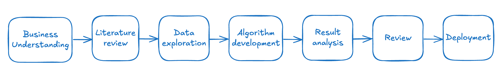

AI & Data Science Frameworks
In data science, the core idea of iterative, value-driven work has led to the emergence of multiple project management frameworks, each addressing similar challenges through the lens of a particular use case or organizational context.
Common Frameworks
| Framework | Stages / Phases | Primary Use Case | Created By |
|---|---|---|---|
| CRISP-DM | Business Understanding, Data Understanding, Data Preparation, Modeling, Evaluation, Deployment | Traditional data mining and analytics projects | Industry Consortium (1996) |
| OSEMN | Obtain, Scrub, Explore, Model, Interpret | Hands-on, fast-paced data science work | Hilary Mason (approx. 2010) |
| TDSP | Business Understanding, Data Acquisition, Modeling, Deployment, Customer Acceptance | Team-based enterprise ML/AI development | Microsoft |
| DataOps | Continuous Integration, Automated Testing, Monitoring, Deployment | Scalable, production-grade ML pipelines | DJ Patil et al. (emerging ~2014) |
| KDD | Selection, Preprocessing, Transformation, Data Mining, Interpretation | Academic-style discovery and exploratory analysis | Academic Community (1989–1996) |
| SEMMA | Sample, Explore, Modify, Model, Assess | SAS-centric analytical workflows | SAS Institute |
| Agile Data Science | Iterative cycles of exploration, modeling, evaluation, and deployment | Startups and product teams delivering data-driven features | Jurney, R. (2017). Agile Data Science 2.0. O’Reilly Media. |
| Flexeegile Implementation | Literature Review, Data Exploration, Algorithm Development, Result Analysis, Review, Deployment | Research-oriented, innovation-led data science in applied settings | Dr. Ori Cohen |
The Core of the Process
All the major data science project frameworks ultimately converge on the same fundamental lifecycle: understanding a problem, exploring data, building solutions, evaluating performance, and deploying results. Whether formalized as CRISP-DM, TDSP, or Agile Data Science, the heart of the process remains iterative learning and value creation through experimentation.
Additionally, all these frameworks were developed in response to the same foundational challenge: how to manage complexity, uncertainty, and iteration in data-driven projects. Each was born out of a specific context, academic research, enterprise product development, fast-moving startups, but they all converge around the same core idea: creating a structured way to move from ambiguity to impact. While the terminology may differ - “Modeling” vs “Data Mining” vs “Algorithm Development”, the intent is the same: to break research down into manageable stages, while enabling learning and adaptation. The real difference lies not in what they do, but in the lens through which they approach project management.

I also created a methodology and implementation that fits well within this paradigm: it adds needed structure to research without constraining it. By defining clear stages starting from Business Understanding, Literature Review, Data Exploration, Algorithm Development, Result Analysis, Review, and Deployment. These stages bridge the gap between exploratory efforts and actionable outcomes, enabling a flexible and adaptable process. They also encourage the scientific mindset to deliver working products, while aligning with business impact, making it an effective framework for modern R&D leadership.
From a product management perspective, although some of these methodologies predate the build-measure-learn loop. The process begins with defining a hypothesis (or business need), proceeds through experimentation or prototyping (build), evaluates results (measure), and then iterates based on insights (learn). In other words, at their core, they echo the same principles: rapidly building a product, measuring user response, and learning from the results to iterate, emphasizing fast feedback and continuous improvement.
Research, product, and engineering are three sides of the same coin - they are structured problem-solving frameworks that seek to create value, just using different tools and language.
In practice, we typically deal with three categories of projects, distinguished by their timeframes and objectives. Each one of the AI project management frameworks can be adapted for each category :
Long-Term Projects Typically conducted in academia or in corporate research labs (e.g., IBM, Meta). These projects aim to push the boundaries of science or technology and often span months. They emphasize flexible milestones and open-ended exploration, with frameworks supporting iterative hypothesis testing and knowledge sharing.
Medium-Term Research Strategic initiatives that are expected to deliver value to the organization in the foreseeable future. These may support future products or capabilities. They apply structured agile cycles with clear checkpoints to balance innovation with deliverable progress toward strategic goals.
Short-Term Research Applied research that directly supports product features, client projects, or internal needs, such as proof-of-concepts (POCs) or reusable APIs. These are usually time-sensitive and tightly scoped. They use lean, fast-execution frameworks focused on rapid prototyping, quick feedback loops, and clear alignment with immediate business impact.
Project management
This section is under construction.